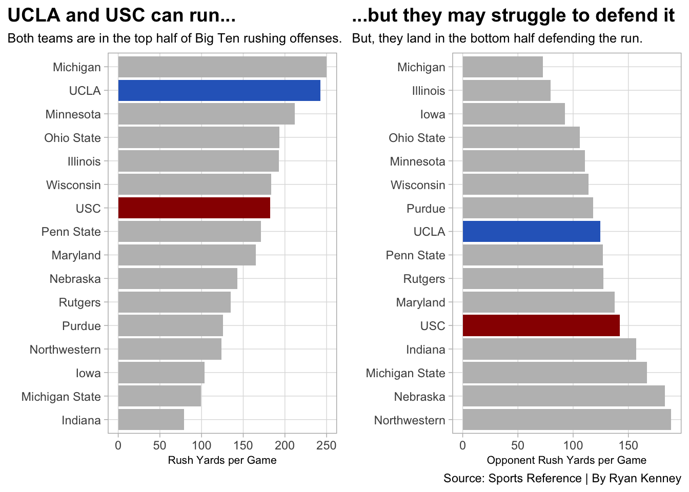
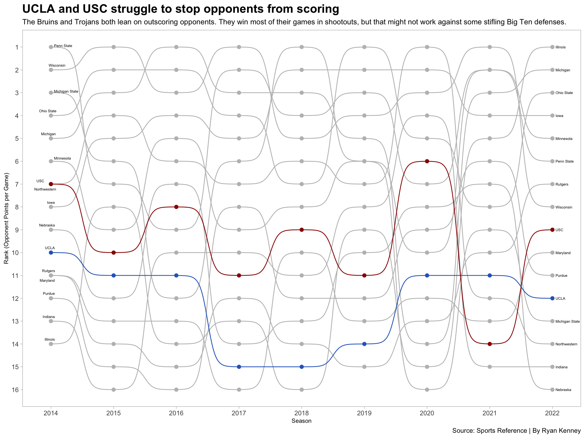
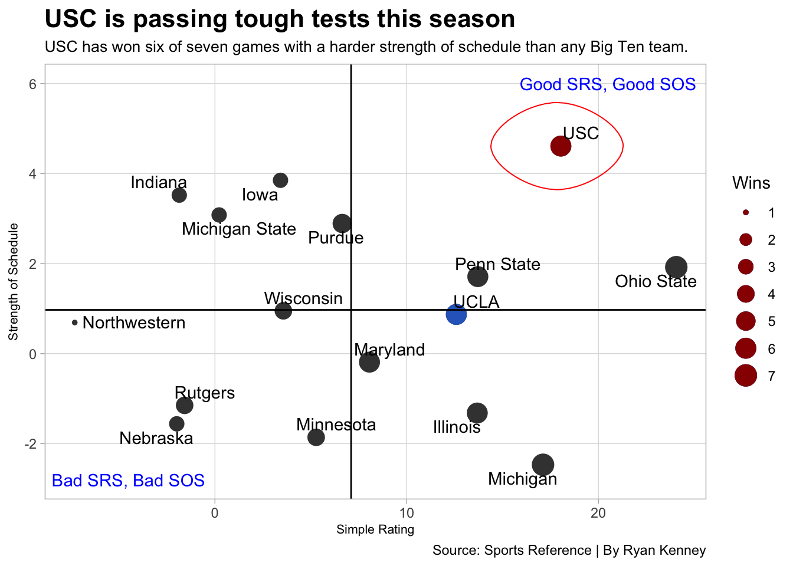

How will new additions UCLA and USC fare in the old-school Big Ten Conference?
B1G
code
analysis
Author
Ryan Kenney
Published
November 6, 2022
The Big Ten is an old-school football conference built on close, hard-nosed games full of tough defense and running the damn ball.
Or, at least that’s what stereotypes say within college football circles. But, there does lie merit behind these stereotypes. That begs the question of how UCLA and USC, who are slated to join the Big Ten in 2024, will fare in conference play. The No. 10 USC Trojans are reaping the benefits of new head coach Lincoln Riley and Oklahoma transfer quarterback Caleb Williams while the No. 12 UCLA Bruins are seeing head coach Chip Kelly’s program revival finally come to life. Will these two teams be able to maintain success upon joining the Big Ten?
Entering the 2022 college football season, the Big Ten had the lowest average total points per conference game (52.5) of any FBS conference since 2014. Meanwhile, the Pac-12 averaged a full touchdown and extra point more (59.5), coming in as the second-highest scoring power five conference on average. Big Ten games also see a much slower pace of play than Pac-12 games.
So, it’s not crazy to say a west coast Pac-12 team might struggle in a snowy, midday matchup against an experienced Big Ten squad. Let’s take a look at some numbers to see how these showdowns will go for UCLA and USC.
If we pretend UCLA and USC are in the Big Ten this season for the sake of comparison, how would their rushing offenses and defenses measure up to the rest of the conference through seven games?
Code
library(tidyverse)library(ggbump)library(ggrepel)library(cowplot)library(ggalt)defense14 <-read_csv("defense14.csv")defense15 <-read_csv("defense15.csv")defense16 <-read_csv("defense16.csv")defense17 <-read_csv("defense17.csv")defense18 <-read_csv("defense18.csv")defense19 <-read_csv("defense19.csv")defense20 <-read_csv("defense20.csv")defense21 <-read_csv("defense21.csv")defense22 <-read_csv("defense22.csv")teamdefense14 <- defense14 %>%mutate(Season ="2014" )teamdefense15 <- defense15 %>%mutate(Season ="2015" )teamdefense16 <- defense16 %>%mutate(Season ="2016" )teamdefense17 <- defense17 %>%mutate(Season ="2017" )teamdefense18 <- defense18 %>%mutate(Season ="2018" )teamdefense19 <- defense19 %>%mutate(Season ="2019" )teamdefense20 <- defense20 %>%mutate(Season ="2020" )teamdefense21 <- defense21 %>%mutate(Season ="2021" )teamdefense22 <- defense22 %>%mutate(Season ="2022" )teamdefense <-bind_rows(teamdefense14, teamdefense15, teamdefense16, teamdefense17, teamdefense18, teamdefense19, teamdefense20, teamdefense21, teamdefense22)bigten22 <-read_csv("bigten22.csv")bigtenoffense22 <-read_csv("bigtenoffense22.csv")bigtendefense22 <-read_csv("bigtendefense22.csv")uscOff <- bigtenoffense22 %>%filter(School =="USC")uclaOff <- bigtenoffense22 %>%filter(School =="UCLA")bar1 <-ggplot() +geom_bar(data=bigtenoffense22, aes(x=reorder(School, RushYds), weight=RushYds), fill="grey") +geom_bar(data=uclaOff, aes(x=reorder(School, RushYds), weight=RushYds), fill="#2D68C4") +geom_bar(data=uscOff, aes(x=reorder(School, RushYds), weight=RushYds), fill="#990000") +coord_flip() +labs(title="UCLA and USC can run... ", subtitle ="Both teams are in the top half of Big Ten rushing offenses.", x="", y="Rush Yards per Game", caption ="") +theme_light() +theme(plot.title =element_text(size =14, face ="bold"),axis.title =element_text(size =8), plot.subtitle =element_text(size=9.5), panel.grid.minor =element_blank(),plot.title.position ="plot" )uscDef <- bigtendefense22 %>%filter(School =="USC")uclaDef <- bigtendefense22 %>%filter(School =="UCLA")bar2 <-ggplot() +geom_bar(data=bigtendefense22, aes(x=reorder(School, desc(OppRushYds)), weight=OppRushYds), fill="grey") +geom_bar(data=uclaDef, aes(x=reorder(School, desc(OppRushYds)), weight=OppRushYds), fill="#2D68C4") +geom_bar(data=uscDef, aes(x=reorder(School, desc(OppRushYds)), weight=OppRushYds), fill="#990000") +coord_flip() +labs(title ="...but they may struggle to defend it", subtitle="But, they land in the bottom half defending the run.", x="", y="Opponent Rush Yards per Game", caption="Source: Sports Reference | By Ryan Kenney") +theme_light() +theme(plot.title =element_text(size =14, face ="bold"),axis.title =element_text(size =8), plot.subtitle =element_text(size=9.5), panel.grid.minor =element_blank(),plot.title.position ="plot" )plot_grid(bar1, bar2)

UCLA comes in as the second-best rushing offense in the Big Ten this seasoning only behind Michigan, who is averaging 250 rushing yards per game. USC also hangs in there, coming in above average at seventh to add to their dynamic passing offense. However, UCLA comes in at the middle of the pack in rushing defense and USC lands as the fifth-worst Big Ten rush defense, giving up an average of nearly 150 yards per game on the ground.
Maybe UCLA and USC will be able to hang in games on the offensive side of the ball. But, it’s important to consider they’ll be facing tougher rushing defenses. The current Pac-12 rushing defense leader, Oregon, would only be fifth-best in the current Big Ten. So, the newcomers will need to get some stops on the defensive side as well to win games in their new conference.
Let’s take a closer look at how UCLA and USC’s defenses compare to the rest of the Big Ten since its expansion in 2014.
Code
bigten <-c("Illinois", "Indiana", "Iowa", "Maryland", "Michigan State", "Michigan", "Minnesota", "Nebraska", "Northwestern", "Ohio State", "Penn State", "Purdue", "Rutgers", "Wisconsin", "UCLA", "USC")bigtendefense <- teamdefense %>%filter(School %in% bigten)bigtenrank <- bigtendefense %>%group_by(Season) %>%mutate(Rank =dense_rank(Pts))ggplot() +geom_bump(data=bigtenrank, aes(x=as.numeric(Season), y=Rank, color=School)) +geom_point(data=bigtenrank, aes(x=as.numeric(Season), y=Rank, color=School), size =2) +geom_text_repel(data = bigtenrank %>%filter(as.numeric(Season) ==2014), aes(x =as.numeric(Season) - .05, y=Rank, label = School), size =2, hjust =1) +geom_text(data = bigtenrank %>%filter(as.numeric(Season) ==2022), aes(x =as.numeric(Season) + .05, y=Rank, label = School), size =2, hjust =0) +scale_color_manual(values =c("grey","grey", "grey", "grey", "grey", "grey","grey", "grey", "grey", "grey", "grey", "grey", "grey","#2D68C4","#990000","grey")) +scale_x_continuous(breaks=c(2014, 2015, 2016, 2017, 2018, 2019, 2020, 2021, 2022)) +scale_y_reverse(breaks=c(1,2,3,4,5,6,7,8,9,10,11,12,13,14,15,16)) +labs(title ="UCLA and USC struggle to stop opponents on defense ", subtitle="The Bruins and Trojans both lean on outscoring opponents. They win most of their games\nin shootouts, but that might not work against some of the Big Ten's stifling defenses.", y="Rank (Opponent Points per Game)", x="Season", caption="Source: Sports Reference | By Ryan Kenney") +theme_light()+theme(legend.position ="none",panel.grid.major =element_blank(),plot.title =element_text(size =16, face ="bold"),axis.title =element_text(size =8), plot.subtitle =element_text(size=10), panel.grid.minor =element_blank() )

Not too great. UCLA consistently hangs out with the Big Ten defenses that give up the most points per game. USC isn’t much better, peaking at sixth-best in 2020 before plummeting to the second-worst in 2021.
All of a sudden, it’s not looking as promising for the newcomers. Plus, many argue the Pac-12 is a step down in competition, so these aren’t even fair comparisons in the first place. Pac-12 teams have struggled to take the leap into elite territory. Only one team from the conference has made the College Football Playoff since its start, and it was the Oregon Ducks in the the Playoff’s first year (2014). Ironically, the Ducks fell in a 22-point loss to the Big Ten’s very own Ohio State Buckeyes.
Is this competition gap still the case in 2022? Sports Reference gives us strength of schedule and simple rating data. Simple rating takes into account both strength of schedule and average point differential, meaning teams are rewarded for playing tough opponents, winning handily and, if they do lose, putting up a close fight.
Code
ucla <- bigten22 %>%filter(Team =="UCLA")usc <- bigten22 %>%filter(Team =="USC")ggplot() +geom_point(data=bigten22, aes(x=SRS, y=SOS, size=W), color="black", alpha=.3) +geom_point(data=bigten22, aes(x=SRS, y=SOS, size=W), color="gray25") +geom_point(data=ucla, aes(x=SRS, y=SOS, size=W), color="#2D68C4") +geom_point(data=usc, aes(x=SRS, y=SOS, size=W), color="#990000") +geom_vline(xintercept =7.1025) +geom_hline(yintercept =0.97125) +geom_text(aes(x=20.5, y=6, label="Good SRS, Good SOS"), color="blue") +geom_text(aes(x=-4.5, y=-2.8, label="Bad SRS, Bad SOS"), color="blue") +geom_text_repel(data=bigten22, aes(x=SRS, y=SOS, label=Team) ) +geom_encircle(data=usc, aes(x=SRS-0.2, y=SOS), s_shape=.01, expand=.0000000001, colour="red") +labs(x="Simple Rating", y="Strength of Schedule", title="USC is passing tough tests this season", subtitle="USC has won six of seven games with a harder strength of schedule than any Big Ten team. ", caption="Source: Sports Reference | By Ryan Kenney",size="Wins" ) +theme_light() +theme(plot.title =element_text(size =16, face ="bold"),axis.title =element_text(size =8),plot.subtitle =element_text(size =10),panel.grid.minor =element_blank() )

Well, well, well. Both UCLA and USC find themselves with an above-average simple rating in the Big Ten. The Trojans take it a step further, boasting a 6-1 record despite having the strongest schedule in the conference. Several Pac-12 teams, including No. 8 Oregon and No. 14 Utah are having successful years, thus giving UCLA and USC worthy competition.
UCLA and USC have arguably their strongest squads in years in 2022. Both teams are sitting with six wins and only one loss, having proved themselves against competent opponents. Thus, it’s hard to argue that entering a Big Ten schedule will come as too much of a shock.
However, the style of football played in the Big Ten will take some getting used to. The Bruins and Trojans will face tougher defenses than ever before upon entering the conference, and their middle to below average rushing defenses will be tested by the strong rushing attacks of most Big Ten teams.
Both teams will be competitive in the conference early on, but they’ll likely have some work to do before they’re knocking off the powerhouses like Ohio State and Michigan.
As for that snowy, slow-paced matchup on the road against an average Big Ten team? Don’t be surprised if UCLA and USC fall short and get upset in a few of those games early on in their Big Ten careers.